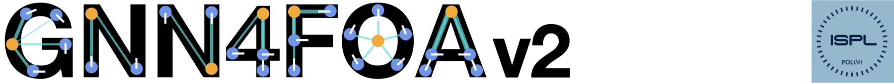

Abstract
Wide-area 6DoF rendering from sparse Ambisonic recordings is usually done by interpolating parametric DirAC descriptors rather than waveforms, which keeps the fidelity of a nearby recording and avoids phase artifacts. Existing approaches, however, use geometric weights that ignore the acoustic scene the microphones observe. We propose a lightweight graph neural network that refines only this interpolation stage: the arrays and the listener position form a graph whose nodes carry local DirAC features and whose edges encode distances and directional relations. The network predicts positive, query-conditioned weights, and energy, diffuseness and direction of arrival are reconstructed by an analytical DirAC layer.
Method
Coordinate-free graph
Absolute positions are excluded from node features; geometry enters only through the edges, so the model handles different layouts and numbers of arrays.
Frequency-wise inference
The graph is evaluated independently for each time-frequency bin with a normalized frequency tag, which keeps the model compact and parallel.
Interpretable output
The network outputs positive weights over the measured arrays; the target DirAC parameters are then computed analytically.
Training data
First-order subset of the HARP simulated Ambisonic RIR dataset, convolved with TIMIT speech, with randomized rooms and receiver grids.
Results
The GNN improves energy reconstruction over a large part of the evaluated region, with local gains of about 3 dB and only small, localized regions where the baseline is better. For diffuseness, which is bounded and varies smoothly, the GNN closely matches the already strong Delaunay baseline. Radiation-pattern similarity also improves, showing that learned weights correct part of the mismatch between geometric proximity and actual acoustic variation.
Real-time plug-in: GNN4FOA
The method is released as GNN4FOA, an open-source JUCE plug-in that reconstructs a first-order Ambisonic signal at a movable listener position from up to ten FOA recordings. You can switch between the Delaunay/DirAC baseline and the learned GNN, move nodes on a spatial map and watch the learned weights live. A macOS installer and the full source are on GitHub.

Cite this work
G. Greco, F. Marri, M. Pezzoli, and F. Antonacci, “Graph Neural Network for Wide-Area 6DoF Ambisonic Rendering,” accepted at the International Workshop on Acoustic Signal Enhancement (IWAENC), 2026. arXiv: 10.48550/arXiv.2610.35741
@inproceedings{greco2026gnn6dof,
title = {Graph Neural Network for Wide-Area 6DoF Ambisonic Rendering},
author = {Greco, Gioele and Marri, Filippo and Pezzoli, Mirco and Antonacci, Fabio},
booktitle = {Proc. International Workshop on Acoustic Signal Enhancement (IWAENC)},
year = {2026},
note = {arXiv:2610.35741}
}